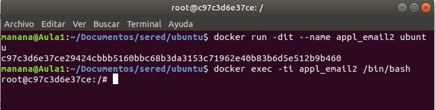
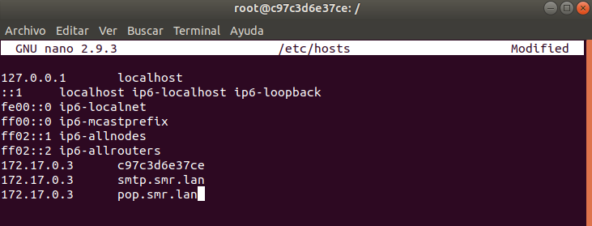
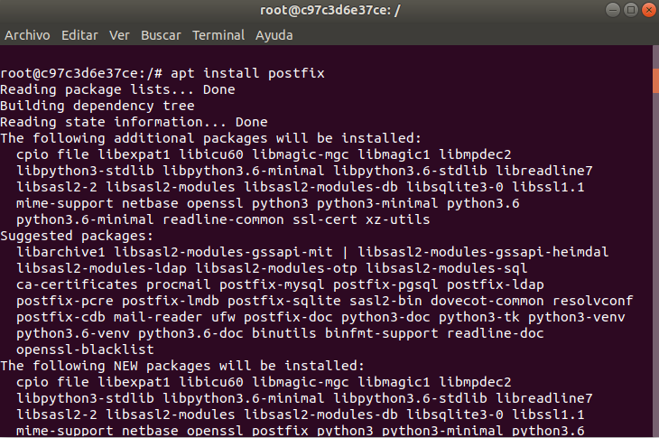
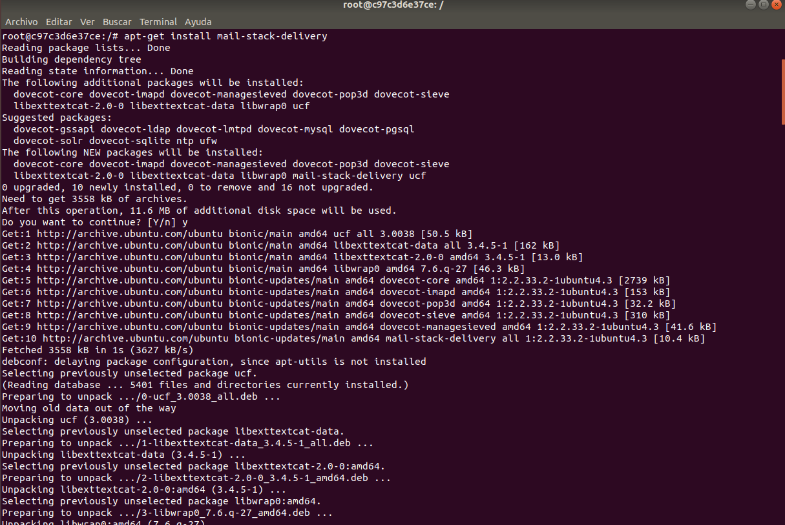
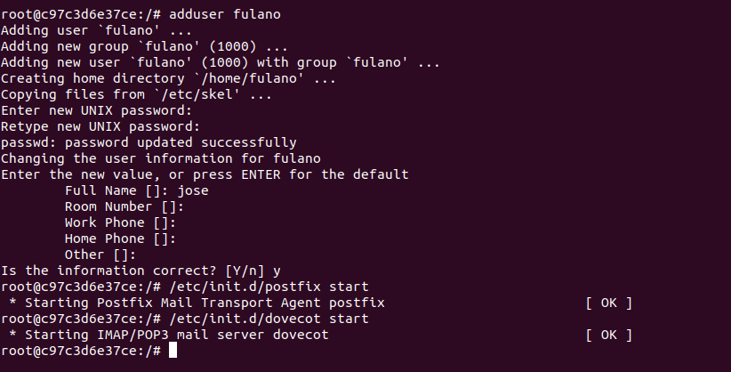
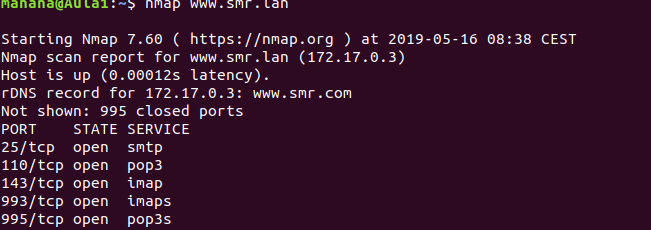
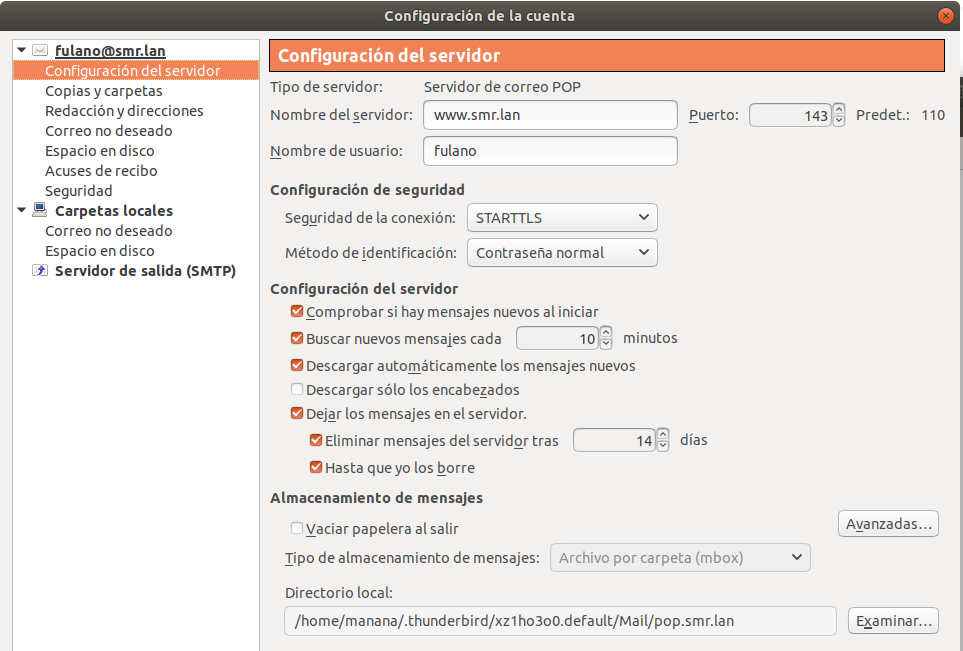

Primero lo que hacemos es un contenedor llamado appl_email2 le pongo el 2 por que ya tenia uno llamado appl_email y ejecutamos el comando docker run -dit –name appl_email2 ubuntu
luego ejecutamos el comando docker exec -ti appl_email2 bin/bash para iniciar el contenedor

Luego miramos ifconfig para ver que ip tenemos y vamos al fichero hosts y ponemos 172.17.0.3 smtp.smr.lan y 172.17.0.3 pop.smr.lan y en el anfitrión igual, es decir, en nuestra terminal normal sin iniciar ningún contenedor.

Luego instalamos postfix y una vez instalamos postfix en General type of mail configuration
ponemos un 2 y luego en System mail name ponemos smr.lan
 Luego instalamos mail-stack-delivery  Luego lo que hacemos es crear un usuario llamado fulano con adduser y luego iniciamos postfix y dovecot poniendo etc/init.d/postfix start y etc/init.d/dovecot start  Luego comprobamos que están abiertos los puertos y lo que hacemos es poner nmap www.smr.lan para comprobar que están abiertos  Luego configuramos la cuenta y ya está